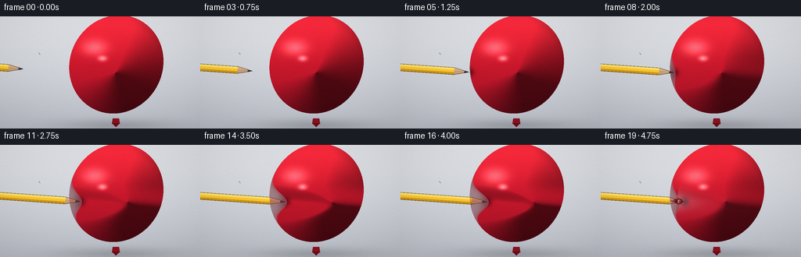
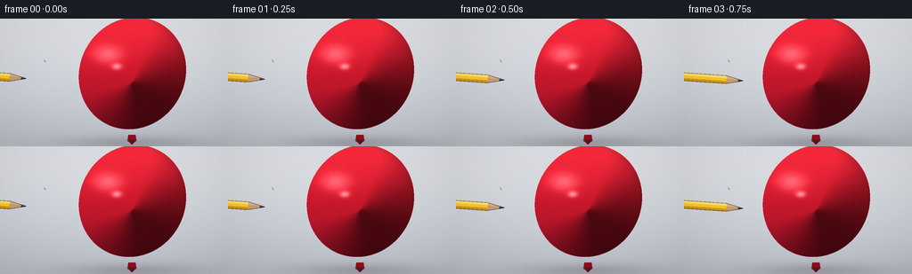

CODING AGENTS AS PIXEL WORLD MODELS
traex/Seed-2.1-Pro-0915 · phygen_025
点击播放 · 原生 RGB 像素
逐轮保存的候选
回放视频、检查图与代码变化。
每份候选均可单独播放。实际图片检查记录在下方工具轨迹中。
候选 01播放与检查图
点击播放 · 原生 RGB 像素


展开代码变化
--- 上一保存版本
+++ 本次保存版本
@@ -0,0 +1,351 @@
+"""
+Text-to-video generation for:
+"A pencil slowly presses into the surface of a fully inflated balloon, with the
+tip gradually penetrating the outer layer."
+
+Rendering pipeline (pure numpy + PIL, no external engines):
+- 3x supersampled per-pixel shading of a rotated ellipse balloon
+- an analytically deformed left wall models the growing dimple around the pencil
+- shaded pencil (hex shaft / wood cone / graphite) drawn in pencil-local frame
+- pierce stage: small hole, latex lip, faint tip visible through translucent latex
+"""
+
+import math
+from pathlib import Path
+
+import numpy as np
+from PIL import Image, ImageDraw
+
+import artifact_io
+
+# -----------------------------------------------------------------------------
+# Spec / constants
+# -----------------------------------------------------------------------------
+CASE_DIR = Path(__file__).parent
+W, H, N, FPS = 256, 144, 20, 4.0
+S = 3 # supersampling factor
+SW, SH = W * S, H * S
+
+# Balloon ellipse (final-resolution coordinates)
+CX, CY, RX, RY = 148.0, 72.0, 60.0, 63.0
+
+# Pencil axis: passes through P0 with angle theta (radians), +u toward the balloon
+THETA = math.radians(4.0)
+P0 = np.array([0.0, 65.5])
+EX = np.array([math.cos(THETA), math.sin(THETA)])
+EY = np.array([-math.sin(THETA), math.cos(THETA)])
+
+# Key light (upper-left)
+L = np.array([-0.50, -0.62, 0.72])
+L /= np.linalg.norm(L)
+
+rng = np.random.default_rng(20261110)
+
+# -----------------------------------------------------------------------------
+# Static geometry grids (coordinates in final-resolution float pixels)
+# -----------------------------------------------------------------------------
+xs = (np.arange(SW, dtype=np.float64) + 0.5) / S
+ys = (np.arange(SH, dtype=np.float64) + 0.5) / S
+gx, gy = np.meshgrid(xs, ys) # (SH, SW)
+
+# local pencil frame
+duv_x = np.stack([gx - P0[0], gy - P0[1]], axis=-1)
+U = duv_x[..., 0] * EX[0] + duv_x[..., 1] * EX[1]
+V = duv_x[..., 0] * EY[0] + duv_x[..., 1] * EY[1]
+
+# ellipse quadratic in local frame: A u^2 + B u v + C v^2 + D u + E v + F0 = 0
+ox, oy = P0[0] - CX, P0[1] - CY
+c, s = math.cos(THETA), math.sin(THETA)
+rx2, ry2 = RX * RX, RY * RY
+A = c * c / rx2 + s * s / ry2
+B = 2.0 * s * c * (1.0 / ry2 - 1.0 / rx2)
+Cq = s * s / rx2 + c * c / ry2
+D = 2.0 * (ox * c / rx2 + oy * s / ry2)
+E = 2.0 * (-ox * s / rx2 + oy * c / ry2)
+F0 = ox * ox / rx2 + oy * oy / ry2 - 1.0
+
+# roots of the undeformed ellipse per unique v (v is constant along screen rows)
+v_unique = V[:, 0]
+p = B * v_unique + D
+qq = Cq * v_unique * v_unique + E * v_unique + F0
+disc = p * p - 4.0 * A * qq
+rootable = disc >= 0.0
+sq = np.sqrt(np.maximum(disc, 0.0))
+u_left_0 = np.where(rootable, (-p - sq) / (2.0 * A), np.nan)[:, None]
+u_right_0 = np.where(rootable, (-p + sq) / (2.0 * A), np.nan)[:, None]
+
+# contact coordinate (balloon wall on the pencil axis)
+disc0 = D * D - 4.0 * A * F0
+u_contact = (-D - math.sqrt(disc0)) / (2.0 * A)
+
+# -----------------------------------------------------------------------------
+# Animation parameters per frame
+# -----------------------------------------------------------------------------
+# dimple depth (px) along the pencil axis; 0 until contact at frame 5
+depths = [0.0, 0.0, 0.0, 0.0, 0.0,
+ 1.0, 2.5, 4.5, 7.0, 10.0, 13.0, 16.0, 18.5, 20.5, 22.0, 23.0, 24.0,
+ 24.0, 17.0, 12.0]
+# tip distance relative to undeformed wall (+ => inside)
+tip_advance = [-58.0, -46.0, -33.0, -21.0, -10.0,
+ 0.0, 1.5, 3.5, 6.0, 9.0, 12.0, 15.0, 17.5, 19.5, 21.0, 22.0, 23.0,
+ 24.5, 21.0, 19.0]
+# puncture opening half-axes (0 = intact); pierce begins frame 17
+open_b = [0.0] * 17 + [0.9, 2.0, 2.6]
+open_a = [0.0] * 17 + [2.2, 3.0, 3.2]
+wrinkle = [0.0] * 17 + [0.25, 0.65, 1.0]
+
+SIGMA_D = 11.0 # dimple spread across the surface (perp half-width)
+
+
+def smoothstep(e0, e1, x):
+ t = np.clip((x - e0) / (e1 - e0), 0.0, 1.0)
+ return t * t * (3.0 - 2.0 * t)
+
+
+def local_to_global(u, v):
+ return P0 + u * EX + v * EY
+
+
+# -----------------------------------------------------------------------------
+# Background (static): soft studio gradient, ground shadow, string
+# -----------------------------------------------------------------------------
+def build_background():
+ top = np.array([229.0, 231.0, 235.0])
+ bot = np.array([188.0, 192.0, 201.0])
+ t = gy / H
+ bg = top[None, None, :] * (1.0 - t[..., None]) + bot[None, None, :] * t[..., None]
+
+ sh = np.exp(-(((gx - CX) / 72.0) ** 2 + ((gy - 140.0) / 8.0) ** 2))
+ bg *= (1.0 - 0.16 * sh[..., None])
+
+ img = Image.fromarray(np.clip(bg, 0, 255).astype(np.uint8), "RGB").convert("RGBA")
+ dr = ImageDraw.Draw(img)
+ pts = [tuple(np.array([148.0, 140.0]) + np.array([0.9 * i, 0.55 * i + 0.09 * i * i]))
+ for i in range(7)]
+ dr.line(pts, fill=(120, 118, 124, 200), width=2)
+ return np.asarray(img, dtype=np.float64)[..., :3]
+
+
+BG = build_background()
+
+
+# -----------------------------------------------------------------------------
+# Pencil layer
+# -----------------------------------------------------------------------------
+def render_pencil(u_tip):
+ rgba = np.zeros((SH, SW, 4), dtype=np.float64)
+ u_w0 = u_tip - 6.5 # graphite base
+ u_c0 = u_tip - 19.5 # cone / shaft join
+
+ shaft = U < u_c0
+ wood = (U >= u_c0) & (U < u_w0)
+ graph = (U >= u_w0) & (U <= u_tip)
+
+ half = np.zeros_like(U)
+ half[shaft] = 4.75
+ cw = (U - u_c0) / 13.0
+ half[wood] = 4.75 + (1.7 - 4.75) * cw[wood]
+ half[graph] = 1.7 * np.clip((u_tip - U[graph]) / 6.5, 0.0, 1.0)
+
+ inside_p = (np.abs(V) <= half) & (half > 0)
+
+ col = np.zeros((SH, SW, 3))
+ # shaft hexagonal faces
+ y_top = (255, 224, 110)
+ y_mid = (250, 198, 46)
+ y_bot = (206, 150, 26)
+ face = np.ones((SH, SW), dtype=np.int8)
+ face[V < -1.58] = 0
+ face[V > 1.58] = 2
+ pal = np.array([y_top, y_mid, y_bot], dtype=np.float64)
+ col[shaft] = pal[face[shaft]]
+
+ # wood cone, darker on lower side
+ wood_shade = 0.80 + 0.20 * np.clip(1.0 - (V + 4.75) / 9.5, 0, 1)[wood]
+ wood_base = np.array([228.0, 186.0, 138.0])
+ col[wood] = wood_base[None, :] * wood_shade[..., None]
+
+ # graphite, tiny upper specular streak
+ g_shade = np.clip(0.72 + 0.28 * (1.0 - V[graph] / 1.7), 0.55, 1.0)
+ col[graph] = np.array([58.0, 58.0, 66.0])[None, :] * g_shade[..., None]
+ streak = graph & (V > -1.25) & (V < -0.55) & (U < u_w0 + 3.5)
+ col[streak] = np.array([120.0, 118.0, 128.0])
+
+ # dark outline near edges
+ edge = inside_p & (np.abs(V) >= half - 0.55)
+ col[edge] *= 0.45
+ cone_line = wood & (np.abs(V) < 0.35)
+ col[cone_line] *= 0.9
+
+ rgba[inside_p, :3] = col[inside_p]
+ rgba[inside_p, 3] = 255.0
+ return rgba
+
+
+# -----------------------------------------------------------------------------
+# Balloon shading for one frame
+# -----------------------------------------------------------------------------
+def render_frame(fi):
+ depth = depths[fi]
+ u_tip = u_contact + tip_advance[fi]
+ ha, hb = open_a[fi], open_b[fi]
+
+ # deformed left wall: gaussian dimple around v=0
+ gauss = np.exp(-V ** 2 / (2.0 * SIGMA_D ** 2))
+ dv = depth * gauss
+ uL = u_left_0 + dv
+ uR = u_right_0
+
+ inside0 = (np.broadcast_to(rootable[None, :].T, U.shape)
+ & (U >= u_left_0) & (U <= u_right_0))
+ balloon = inside0 & (U >= uL) & (U <= uR)
+ pocket = inside0 & (U < uL) # displaced cavity (shows background)
+
+ # puncture opening at the wall crossing the axis
+ u_wall = u_contact + depth
+ if hb > 0:
+ hole = (((U - u_wall) / ha) ** 2 + (V / hb) ** 2) < 1.0
+ balloon &= ~hole
+ else:
+ hole = np.zeros_like(balloon)
+
+ # implicit field of the deformed body, evaluated at (u - dv, v)
+ ud = U - dv
+ qval = A * ud * ud + B * ud * V + Cq * V * V + D * ud + E * V + F0
+ rho = np.sqrt(np.clip(qval, 0.0, 1.0))
+ Gu = 2 * A * ud + B * V + D
+ ddv = -depth * gauss * V / (SIGMA_D ** 2)
+ Gv = B * ud + 2 * Cq * V + E - Gu * ddv
+ gn = np.hypot(Gu, Gv) + 1e-9
+ lu, lv = Gu / gn, Gv / gn
+ nx = lu * EX[0] + lv * EY[0]
+ ny = lu * EX[1] + lv * EY[1]
+ nz2 = np.clip(1.0 - rho * rho, 0.0, 1.0)
+ nz = np.sqrt(nz2)
+
+ diff = np.clip(nx * L[0] + ny * L[1] + nz * L[2], 0.0, 1.0)
+ inten = 0.40 + 0.72 * diff + 0.10 * nz
+
+ # vertical color gradient over the balloon
+ ty = np.clip((gy - (CY - RY)) / (2 * RY), 0.0, 1.0) ** 0.85
+ top_c = np.array([228.0, 52.0, 66.0])
+ mid_c = np.array([201.0, 26.0, 42.0])
+ btm_c = np.array([126.0, 14.0, 30.0])
+ base = mid_c[None, None, :] * (1 - ty[..., None]) + btm_c[None, None, :] * ty[..., None]
+ upper = smoothstep(0.45, 1.0, 1.0 - ty)[:, :, None]
+ base = base * (1 - 0.35 * upper) + top_c[None, None, :] * (0.35 * upper)
+ col = base * inten[..., None]
+
+ # contact / cavity ambient occlusion near the tip
+ ao = 0.55 * np.exp(-(((U - u_tip) / 5.5) ** 2 + (V / 5.5) ** 2))
+ col *= (1.0 - ao[..., None])
+
+ # stretched-skin sheen around the mouth of the dimple
+ if depth > 3:
+ sheen = (np.clip(depth / 24.0, 0, 1)
+ * np.exp(-(((U - (u_contact + 1.5)) / 7.0) ** 2 + (V / 11.5) ** 2)))
+ col += sheen[..., None] * np.array([42.0, 26.0, 30.0])[None, None, :]
+
+ # specular highlights (key side)
+ h1 = np.exp(-(((gx - 121.0) / 15.0) ** 2 + ((gy - 40.0) / 9.5) ** 2))
+ h2 = np.exp(-(((gx - 131.0) / 5.0) ** 2 + ((gy - 54.0) / 3.2) ** 2))
+ col += (78.0 * h1 + 130.0 * h2)[..., None] * np.array([1.0, 0.92, 0.88])[None, None, :]
+
+ # cool rim light on the right edge
+ fres = (1.0 - nz) ** 2
+ rim = fres * np.clip(nx, 0, 1)
+ col += (34.0 * rim)[..., None] * np.array([0.55, 0.65, 1.0])[None, None, :]
+
+ balloon_rgba = np.zeros((SH, SW, 4))
+ balloon_rgba[balloon, :3] = np.clip(col[balloon], 0, 255)
+ balloon_rgba[balloon, 3] = 255.0
+
+ # stretched membrane covering the dimple cavity before/after piercing;
+ # it thins near the tip so the graphite shows through, thick at the rim
+ membrane_rgba = np.zeros((SH, SW, 4))
+ mem = pocket
+ if hb > 0:
+ mem = mem & ~hole
+ d_to_wall = np.clip(uL - U, 0.0, None)
+ thin = np.exp(-d_to_wall / 3.2) # 0 deep in cavity, 1 at rim
+ m_a = np.clip(0.30 + 0.42 * thin, 0.0, 0.80)
+ m_col = (np.array([132.0, 22.0, 34.0])[None, None, :]
+ + thin[..., None] * np.array([34.0, 14.0, 18.0])[None, None, :])
+ membrane_rgba[mem, :3] = m_col[mem]
+ membrane_rgba[mem, 3] = 255.0 * m_a[mem]
+
+ # translucent latex corridor once pierced: shaft faintly visible through skin
+ alpha = np.zeros((SH, SW))
+ if hb > 0:
+ see = balloon & (U > u_wall - 2.0)
+ t = (np.exp(-np.clip(U - u_wall, 0, None) / 20.0)
+ * np.exp(-V ** 2 / (2 * 8.5 ** 2)))
+ alpha[see] = 255.0 * (1.0 - 0.40 * t[see])
+ alpha[balloon & (alpha == 0)] = 255.0
+ balloon_rgba[..., 3] = alpha
+
+ # ------------------------------------------------------------- compositing
+ img = BG.copy()
+
+ # shaded cavity where the surface was displaced
+ cav = pocket.astype(np.float64)
+ cav *= 0.18 + 0.30 * np.exp(-(((U - u_tip) / 9.0) ** 2 + (V / 11.0) ** 2))
+ img *= (1.0 - np.clip(cav, 0, 0.55))[..., None]
+
+ pencil = render_pencil(u_tip)
+ pa = pencil[..., 3:4] / 255.0
+ img = img * (1 - pa) + pencil[..., :3] * pa
+
+ ma = membrane_rgba[..., 3:4] / 255.0
+ img = img * (1 - ma) + membrane_rgba[..., :3] * ma
+
+ ba = balloon_rgba[..., 3:4] / 255.0
+ img = img * (1 - ba) + balloon_rgba[..., :3] * ba
+
+ # neck + knot (opaque balloon parts at the bottom)
+ pil = Image.fromarray(np.clip(img, 0, 255).astype(np.uint8), "RGB")
+ dr = ImageDraw.Draw(pil)
+ dr.polygon([(144 * S, 131 * S), (152 * S, 131 * S),
+ (153 * S, 138 * S), (143 * S, 138 * S)],
+ fill=(138, 18, 32))
+ dr.polygon([(143 * S, 137 * S), (153 * S, 137 * S), (148 * S, 142 * S)],
+ fill=(110, 12, 26))
+
+ # puncture lip + stress wrinkles
+ if hb > 0:
+ def ellipse_pts(ru, rv, n=48):
+ return [tuple((local_to_global(u_wall + ru * math.cos(a),
+ rv * math.sin(a)) * S).astype(float))
+ for a in np.linspace(0, 2 * math.pi, n, endpoint=False)]
+
+ dr.line(ellipse_pts(ha + 0.6, hb + 0.6), fill=(74, 8, 18), width=3)
+ dr.line(ellipse_pts(ha - 0.4, hb - 0.4), fill=(206, 44, 56), width=2)
+
+ w = wrinkle[fi]
+ if w > 0:
+ for ang_deg, ln in ((166, 7.0), (180, 8.5), (194, 6.0), (150, 4.5), (210, 4.5)):
+ a = math.radians(ang_deg)
+ p1 = local_to_global(u_wall - ha * 0.4, 0)
+ p2 = local_to_global(u_wall - ha * 0.4 + ln * math.cos(a),
+ ln * math.sin(a))
+ dr.line([tuple(p1 * S), tuple(p2 * S)],
+ fill=(96, 12, 24), width=max(1, int(round(3 * w))))
+
+ out = pil.resize((W, H), Image.Resampling.LANCZOS)
+ arr = np.asarray(out, dtype=np.float64)
+ yy, xx = np.mgrid[0:H, 0:W]
+ vig = 1.0 - 0.10 * (((xx - W / 2) / (W / 2)) ** 2
+ + ((yy - H / 2) / (H / 2)) ** 2) / 2
+ arr *= vig[..., None]
+ arr += rng.normal(0, 1.1, arr.shape)
+ return np.clip(arr, 0, 255).astype(np.uint8)
+
+
+def main():
+ frames = np.stack([render_frame(i) for i in range(N)], axis=0)
+ artifact_io.save(frames, CASE_DIR)
+ print(f"saved {frames.shape} at {FPS} fps -> {CASE_DIR}")
+
+
+if __name__ == "__main__":
+ main()
可观测工具轨迹
实际执行的命令与返回图片。
命令 1exit 0
/bin/bash -lc 'ls -la && cat prompt.txt && cat GENERATION_RULES.md && cat task_spec.json'
命令 2exit 0
/bin/bash -lc 'cat artifact_io.py && cat player_template.html'
命令 3exit 1
/bin/bash -lc 'cd . && python generate.py && ls -la'
命令 4exit 1
/bin/bash -lc 'cd . && python generate.py && ls -la frames | head'
命令 5exit 0
/bin/bash -lc 'cd . && python generate.py && ls -la'
保存候选 1 份；完成命令 5 次；可验证图片返回 0 张。原始 API 响应与完整日志保留在本地。